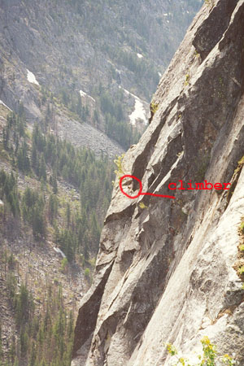
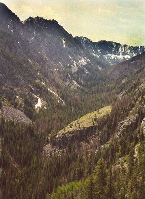
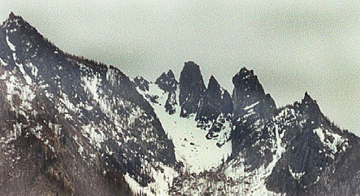
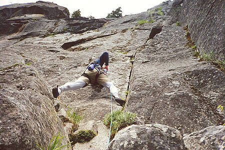
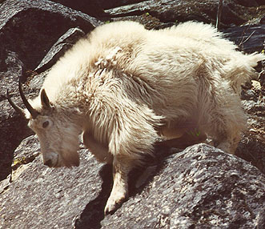
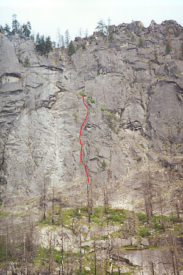

Leavenworth Climbing
May 20-21, 2000
Steve and I climbed the route White Slabs (5.7, 4 pitches) on the Snow Creek Wall. We wanted to continue to the top of the wall via a route called the Umbrella Tree (5.7), but couldn’t find a tree, an umbrella, or rock we felt led anywhere but to being scared. If you’ve climbed this route, let me know, we just couldn’t figure it out from the descriptions.
So we rappelled from the Country Club Ramp, deciding to go down our route. On the first double rope rappel, the rope got stuck in a crack. I reascended, using a TibLoc for a self-belay. Moving the rope out of the path of this crack was good enough. We did two more double rope rappels, arriving at our gear at the base. This was a good climb, with good protection. We built only one gear anchor, otherwise we had trees.
We zoomed down the trail, then 1500 feet up the other side of the Icicle valley to climb “Givler’s Crack,” a great 5.7+ I had heard about. We had no idea it would be so hard to get to. The route we took to get to the base was 4th class in places. Going down, we found the trail, and it was much easier. We did the climb in one pitch, starting from the tree on the right, and 15 feet above the 5.8 direct start. We spent 20 minutes wondering if we should just bail, due to impending rain and darkness. But once roped up, and staring up at the beautiful line, I had to go for it! I knew Steve would kill me if a downpour started while we climbed!






Exposed and tricky face moves led me to the crack, then a bomber flake “thank god” hold. I was hand-jamming for all I was worth, and plugging a bomber nut or cam in regularly. I don’t think I’ve ever placed so much gear, and I was really happy that a good range of sizes were accepted. Some of the placements had awkward stances, and the clouds coming in didn’t help much. The pitch was long. There was one place on low angle terrain near the end where I had to down-climb twice to free the rope from a constriction it kept getting into. I was careful to avoid that again, and soon I was belaying Steve. He enjoyed the climb a lot, finding it easier than he thought it would be. The appearance of this climb is classic, and it does look hard.
There were a few drops of rain, but the deluge never came. In growing darkness we sped down the rough trail to the car.
We got an excellent spaghetti dinner in town, and went back out to the canyon to sleep. We wanted to bivy near the Snow Lakes parking lot, but a heavy ranger presence scared us away. We went to the Bridge Creek Campground, and I asked a partying family if we could sleep in a corner of their plot. They couldn’t believe we didn’t have a tent, thought we were crazy. But they were really nice, and happy to share. The teenage girls had an odd habit of screaming piercingly around midnight though, followed by giggling. No one took any notice.
Back up the Snow Lakes trail-head in the morning, feeling pretty tired from the day before. We didn’t expect to do so much “hiking” on our “climbing” weekend. After a lot of scrambling, we reached the base of Satellite, or so we thought. Steve got the lead, a mossy, scary crack by a greasy smooth slab of granite. The first crux was pulling over a shrub in the crack. The second was higher, with bad gear below, and thin handholds. He built an anchor in a dihedral under an overhang. This was a tough lead, probably 5.7 and dirty. I got the easy work of scrambling left, up and left in a low 5th-class gully. Decent rock and occasional shrubs and slings were my world. I topped out on a small buttress, building a low-quality anchor. I could see we must be off route. To my left were easy gullies. To my right was a grim scene of overhangs. The route must be far to the right, where I couldn’t see. Steve ran it out up the gullies, then I did the same, finally connecting to the descent trail. We were pretty tired, and ready to go home. Two climbers came down from the wall, raving about Outer Space. We followed them down the stressful loose terrain. I was so tense for some reason that my stomach started hurting. At one point, I narrowly avoided a fall. Thankfully, Steve led the way and I didn’t have to think about route-finding.
We got some great mountain goat pictures at our gear cache, and Steve figured out that we should have started a mere 30 feet to the right. We continued down, going too far and ending up in an awful dirt/charred tree corridor, half falling for 300 feet. We had to climb up a bit, then were able to take the trail down from the wall, across the creek, and to the car, 2 miles away.
This was a tiring weekend. But rewarding. We got more 5.7’s under our belts, and we learned something about the Snow Creek Wall. Lesson: don’t attempt the descent in the dark! It’s hard enough when feeling fresh in the daylight. If it were dark, I think I’d just sit on top for the night…
Steve’s Notes
On pitch 3 I looked down to find a tiny, bright green frog hitching a ride on the toe of my climbing shoe. It was hard to figure out how he came to be there, 250 feet up a dry and dusty wall and at least 500 more feet up from the creek. Reluctantly I shooed him back onto the rock. In the interest of the purest climbing ethics, I just could not allow him to use me as “aid” on his supposed free climb…
I walked up to a large group in the campground to beg for enough space to lay out our sleeping bags and they asked me if I belonged to the Mountaineers organization. Wanting to make a good impression, I said, “I’m not a member, but I sure buy a lot of your books!” Apparently they were impressed enough to offer us space they had reserved in another campground up the road.
I was a bit apprehensive starting up the dihedral. The portion we could see was not too difficult, maybe 5.5. I should have realized that this was not the Satellite route since the crack was entirely filled with moss, so that I had to dig out the moss with my nut tool in order to make each pro placement. We had heard that the route was not climbed often, so maybe it had filled in during the last few years. Despite the moss the pro was excellent, except near the top. Except for the moss and the fiendish bush growing out of the crack, the climbing was very enjoyable, but got more difficult (about 5.7) and less protectable toward the top as the crack became shallow. Fortunately I was able to get to the top of the dihedral and onto a ledge for the belay, though it took a lot of time digging crud out of crack in order to construct a solid gear anchor.
A highlight of the trip was the friendly mountain goat. We met him briefly on the first day before descending the climber’s trail to the creek. On the second day, he spent quite a lot of time with us, following us as we tried to find the start of the route and greeting us again after we had descended. I was jealous of the way he flitted about on the slabs and loose rock. He was clearly the master of the 4th class domain.